9.4. The Braid Groups Form a (nonsymmetric) Operad
Recall that the \(n\)-th braid group \(B_n\) is the collection of all possible braidings of \(n\)-strands, forming a group under composition. Each braid group has the presentation
where (\texttt{1}) holds only when \(1 \le i \le n - 2\) and (\texttt{2}) hold only when \(|i - j| > 1\). Below is the braid \(\sigma_1 \sigma_3 \sigma_2 \sigma_2 \sigma_3\), where we envision application of the generators starting from the left and going to the right.
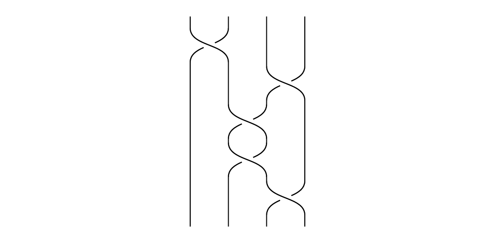
Each braid group has a natural projection mapping \(\pi: B_n \to S_n\), where each braid is sent to the underlying permutation. The kernel of this map is the pure braid group, which doesn't change the permutation. However, recall that \(S_n\) is a symmetric operad, whose composition is given by a block permutation. That is, given a permutation \(S_n\), and \(n\)-many other permutations \(\sigma_1 \in S_{a_1}, \dots, \sigma_n \in S_{a_n}\), we can form a permutation in \(S_{a_1 + \cdots + a_n}\). \ 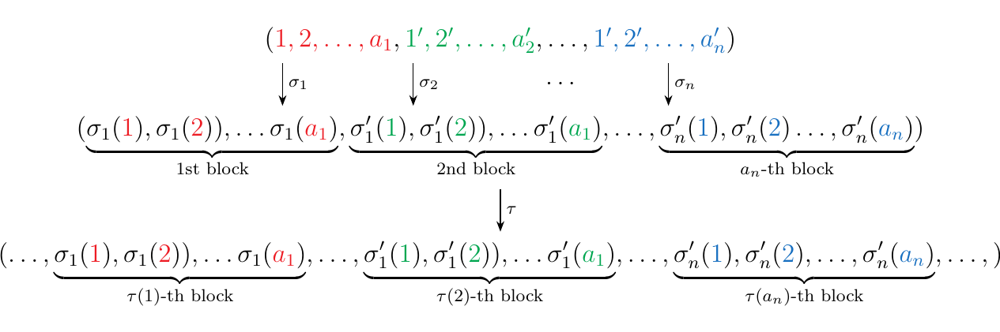
This then suggests the idea that there exists an operadic composition for braids; and such an observation checks out. Given a braid \(\beta \in B_n\), and \(n\)-many other braids \(\alpha_1 \in B_{a_i}, \dots, \alpha_n \in B_{a_n}\), we can form a braid in \(B_{a_1 + \cdots + a_n}\). The operadic composition is analogous to what we had before with permutations; we're going to stick braids inside of braids.
(Topological.) Let \(\beta \in B_n\) be a braid. We say that the \(i, (i+1), \dots (i + k)\)-th strands form a cable if there exist a cylinder (depends on ambient space; need to decide one for consistency) which is disjoint from all other strands of \(\beta\).
Every cable is obtained from a map \(\circ_k: B_n \times B_m \to B_{m + n -1}\).
In general, we can define an "operadic" composition where the composition is the cabling of \(n\)-braids.
We'll want to show that this does form an operad. But before we do that we'll need to obtain an algebraic expression, based on the generators of the braids being cabled, which describe the resultant braid.
Towards that goal, consider the generator \(\sigma_1\), which simply swaps the first strand over the second. Suppose we would like to substitute 4 parallel strands in the first strand of \(\sigma_1\), and just one strand in the second strand of \(\sigma_1\). How do we calculate this braid?
\ 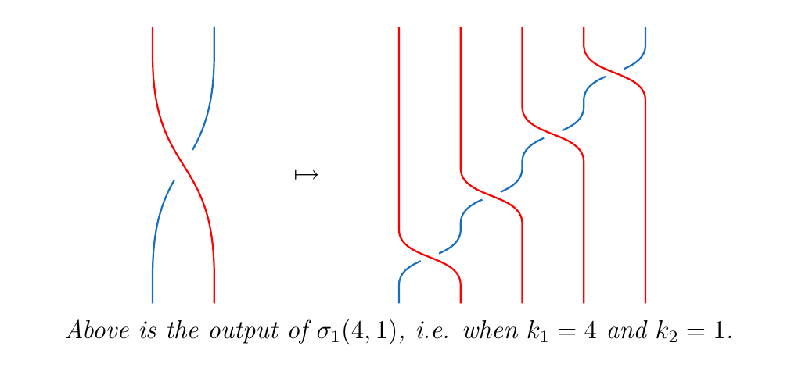 The blue line travels diagonally down, going underneath each red strand once. The blue line crossing underneath the \(i\)-th red strand can be represented as \(\sigma_{i}\). We then multiply all of these together to get the braid.
\ 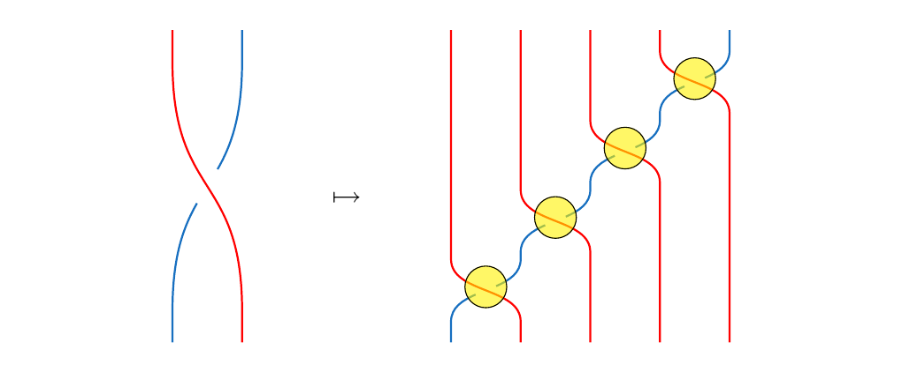 ence we see that the braid is simply \(\sigma_4\sigma_3\sigma_2\sigma_1\).
Suppose now that we would like to substitute 2 parallel strands into the first strand of \(\sigma_1\), and also substitute 3 parallel strands in the second strand of \(\sigma_2\). Then this produces a braid of 5 strands. \ 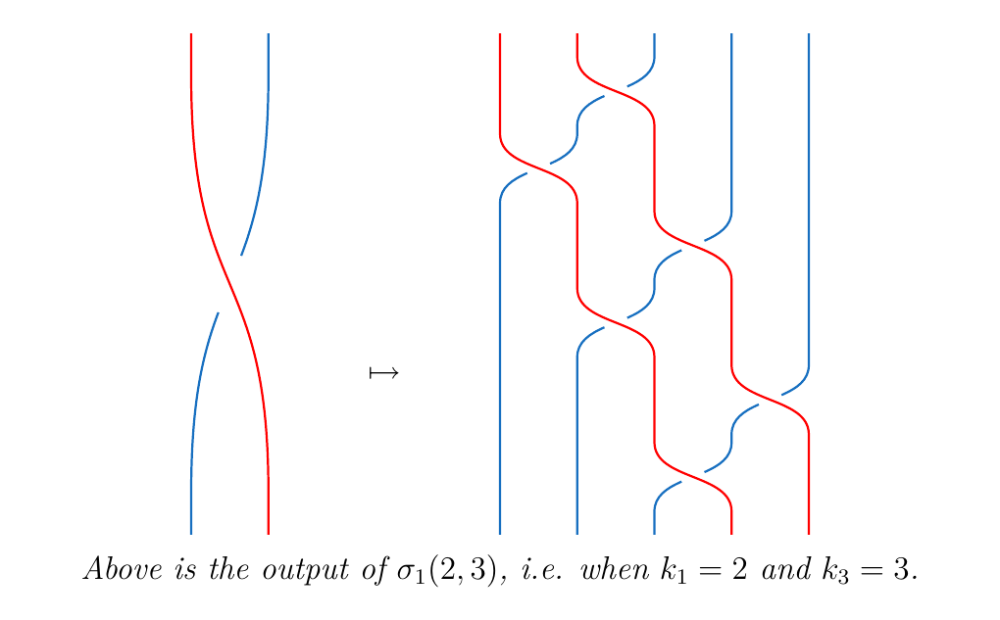 How do we calculate this braid? Observe that the \(\textcolor{Red}{i}\)-th red strand crossing over the \(\textcolor{RoyalBlue}{j}\)-th strand can be represented as \(\sigma_{i + j - 1}\). In the previous situation, \(j\) was equal to 1, so it each crossing was just \(\sigma_{i}\).
\ 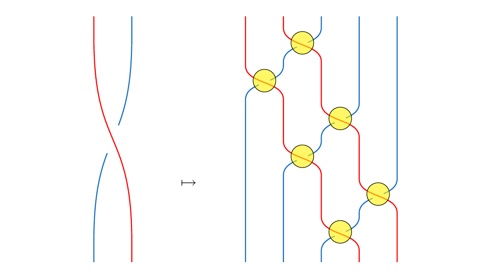 verall, we can simply see that the braid is given by
Now suppose more generally that we have \(k_1\)-many red lines and \(k_2\)-many blue lines. Then we can iteratively describe their crossings one line at time, just like we did above. The crossings will look somewhat like this:
To describe this braid, we note that there will be \(k_1\cdot k_2\)-many crossings, and hence \(k_1\cdot k_2\)-many generators required to describe the crossings. If we follow the first blue line, and track each time it crosses with the red lines, we see that their crossings will be \(\sigma_{k_1}, \sigma_{k_1-1}, \dots, \sigma_{1}\). Moving onto the second blue and again traveling down, the crossings will be \(\sigma_{k_1+1}, \sigma_{k_1}, \dots, \sigma_{2}\). If we have \(k_2\)-many blue lines, this will be done \(k_2\) many times.
\ 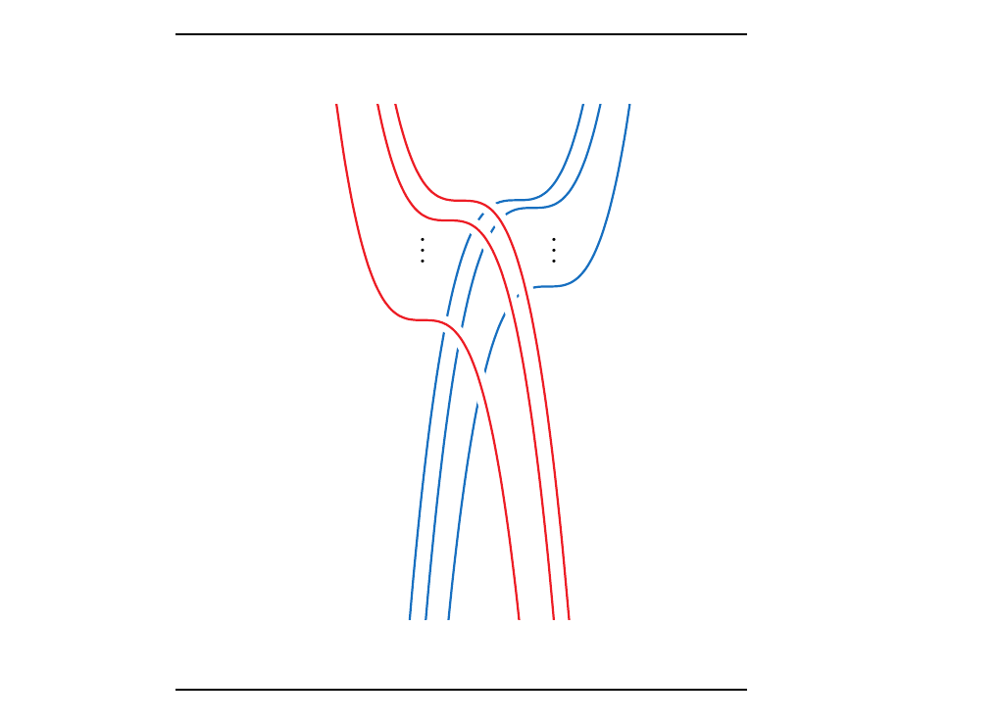 Hence we have that \begin{equation} \sigma_1(k_1, k_2) = \prod_{m = 1}^{k_2}\sigma_{(k_1 + \textcolor{NavyBlue}{m}-1)}\sigma_{(k_1 + \textcolor{NavyBlue}{m}-2)}\cdots\sigma_{\textcolor{NavyBlue}{m}} \end{equation} where starting from \(m= 1, 2, \dots, k_2\) represents us following the \(m\)-th blue line and recording its crossings with the red lines.
We get a similar story if we instead consider \(\sigma_1^{-1}(k_1, k_2)\). Here, we are swapping \(k_1\) many strands under \(k_2\) many strands, so, we have to swap \(k_1\) and \(k_2\). This then gives us the expression
Now it is easily to generalize this to the other generators; we simply \textcolor{NavyBlue}{shift the indices}.
where we set \(m' = m + (i - 1)\) to reindex. Note that this returns the original formula we had once we set \(i = 1\).
Thus we have that:
Let \(\sigma_i\) be a generator. Then the braid obtained by cabling \(k_1\)-many parallel lines into the \(i\)-th strand and \(k_2\)-many parallel lines into the \((i+1)\)-th strand returns a braid in \(B_{k_1 + k_2}\) which may be expressed as
Now we move onto the more difficult question: suppose we have a general braiding \(\beta\) of \(n\) strands, and suppose we have \(k_1, \dots, k_n\) sets of parallel strands. Suppose that we'd like to substitute \(k_1\)-parallel strands in the first strand of \(\beta\), \(k_2\)-parallel strands in the second, all the way to \(k_n\) strands in the \(n\)-th strand. This then defines a braid of \((k_1 + \cdots + k_n)\)-many strands which we denote as
For example, if \(\beta = \sigma_1\sigma_3\sigma_2\sigma_2\), then we have \(\beta\) below on the bottom left. On the bottom right, we have \(\beta(k_1, k_2, k_3, k_4)\) where \(k_1 = 3, k_2 = 2, k_3 = 1, k_4 = 3\).
\ 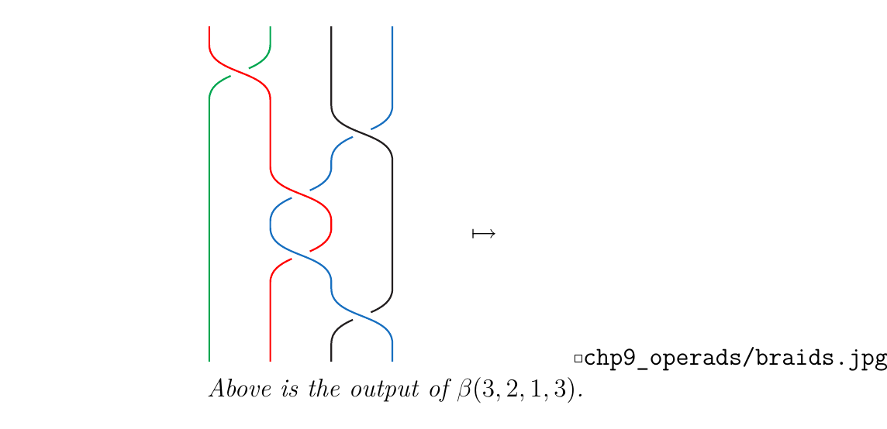 taring at the diagram, we can see that it may be expressed as
But how can we do this in general? To explain, first suppose
To draw the cabled braid \(\beta(k_1, k_2, \dots, k_n)\), we see that we have \(k\)-crossings to focus on; these are where the crossings will happen in our cabled braid. For example, in the braid we provided above, we can highlight the crossings in yellow. \ 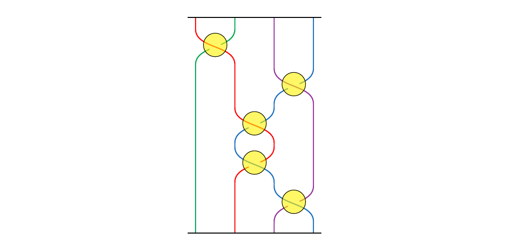 t each crossing, we're going to have something like this: \ 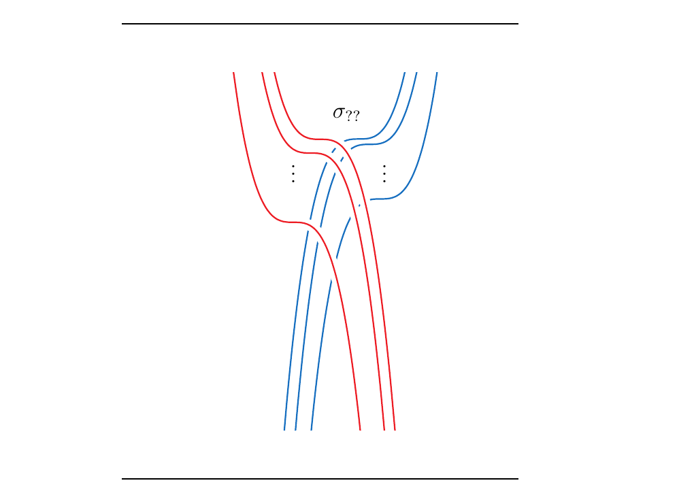 That is, at each crossing, there will be a number of red strands crossing over blue strands. If we can just describe each of these crossings using generators \(\sigma_j\) like we did before, then we can describe the whole braid.
We now face the main problem. To describe an arbitrary crossing, we need to know which generators \(\sigma_1, \sigma_2, \dots, \sigma_{k_1 + \cdots + k_n}\) to use, and in general it's not clear which ones to use. For example, how do we describe the first crossing? We don't know, so we'll write \(\sigma_{??}\). If, however, we know that the first red strand is, say the \(k\)-th strand in \(\beta(k_1, \dots, k_n)\), then we can write the crossing as \(\sigma_k\). Then we can travel down the blue line, writing \(\sigma_{k-1}, \sigma_{k - 2}, \dots\) until we've hit all the red strands. Then we can repeat this process for each blue line.
So to do this in general, we need to answer three questions:
-
How far are all of our red strands from the left?
-
How many red strands are there?
-
How many blue strands are there?
If we can answer those three questions, then we can describe exactly what happens in terms of generators using formula (\ref{sigma_1_cabling}).
We answer the first question:
Let \(\beta \in B_n\) be a braid. Suppose \(\beta\) can be written
as a product of \(k\)-many generators \(\beta = \sigma_{i_1}\sigma_{i_2} \cdots \sigma_{i_k}\)
(where any \(\sigma\) is equally possibly an inverse).
Then we define the quantity
Of course, \(\phi(-, s) = s\), where \(-\) represent empty input, for each strand \(s\). This is because each \(s\)-th strand is originally the \(s\)-th strand.
However, a way to define this is to calculate the underlying permutation of \(\sigma_i^{1}\sigma_j^{2}\dots, \sigma_k^{p}\) using the natural projection map \(\pi: B_n \to S_n\). Hence we see that
Consider the braid \(\sigma_1\sigma_3\sigma_2\sigma_2\sigma_3\) pictured below. Suppose we've applied \(\sigma_1\sigma_3\). Then our braids are now reordered from how they were initially positioned. For instance, after the application of these generators, the green strand is now the first strand; the red strand is now the second; the blue strand is the third; and the black strand is now the fourth. Each color strand is now in a different position than which it started in. \ 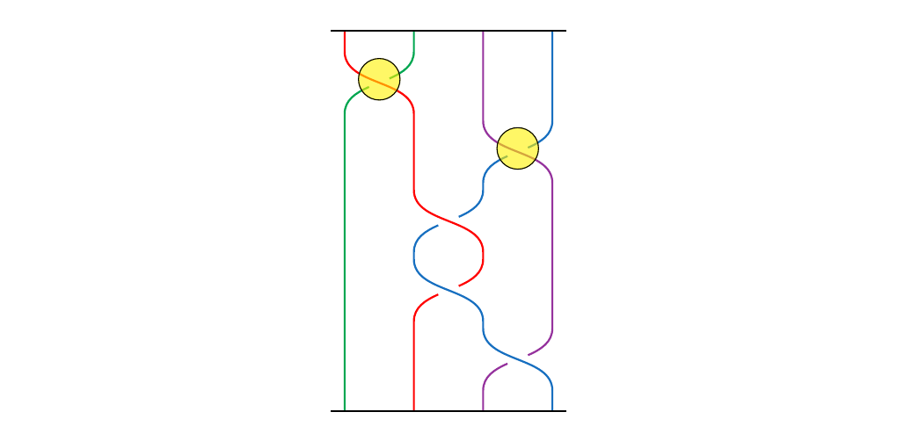 However, we can express this observation using our tool. Note that \(\pi(\sigma_1\sigma_3)\) is the permutation \((1, 2, 3, 4) \mapsto (2, 1, 4, 3)\). Hence we see that
What about after the first three generators have been applied? We calculate again: \(\pi(\sigma_1\sigma_3\sigma_2)\) is the permutation \((1, 2, 3, 4) \mapsto (2, 4, 1, 3)\). Hence we have that
which matches a simple hand-count that we can perform using the picture below. \ 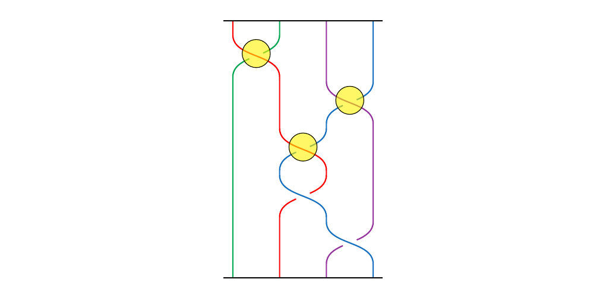 end{example}
This tool allows us to answer our second and third questions. For example, consider again \(\beta(3, 2, 1, 3)\) where \(\beta = \sigma_1\sigma_3\sigma_2\sigma_2\sigma_3\). How do we calculate, for example, the crossing \raisebox{-0.1cm}{$ $}, of 3 blue lines over 1 black line, as in the picture below?
\
 his crossing is induced by \(\sigma_3\), the fifth generator of \(\beta\).
Hence \(\beta\) tells us to cross the \(3\)nd cable over the \(4\)rd cable. But what
are these cables? From looking at the diagram, we definitely know. But in general we won't
be able to just look at the diagram. However, our tool can tell us: Since we've applied \(\sigma_1\sigma_3\sigma_2\sigma_2\),
we see that
his crossing is induced by \(\sigma_3\), the fifth generator of \(\beta\).
Hence \(\beta\) tells us to cross the \(3\)nd cable over the \(4\)rd cable. But what
are these cables? From looking at the diagram, we definitely know. But in general we won't
be able to just look at the diagram. However, our tool can tell us: Since we've applied \(\sigma_1\sigma_3\sigma_2\sigma_2\),
we see that
Therefore, we're crossing blue cables over the black cables. We also now know there are \(k_{\textcolor{RoyalBlue}{4}} = 3\) blue cables and \(k_{\textcolor{Black}{3}} = 1\) many black cables. We have almost everything we need except the following: how far are the blue cables from the left of the diagram?
Well, since the blue strands are inside of the third cable, we just need to ask how many stands are in the first and second cables. But what is the first cable? What's the second? We see that
Hence there are
strands before the blue strands. We can now calculate the crossings:
where
Therefore we propose the following.
Let \(\beta \in B_n\) be a braid, and suppose it may be expressed as \(\sigma_{i_1}\sigma_{i_2} \cdots \sigma_{i_k}\) in terms of \(k\)-many generators. Let \(k_1, \dots, k_n\) be positive integers. Then we have that
where, depending on if \(\sigma_{i_j}\) is an instance of an inverse or not, we have \begin{statement}{ProcessBlue!10}
\end{statement} where in both cases \begin{statement}{ProcessBlue!10}
\end{statement}
The three quantities are the three answers to our original questions:
-
After applying \(\sigma_{i_1}\dots\sigma_{i_{j-1}}\), how many strands come before the cable \(i_j\), relative to the left? \(p_j\).
-
How many strands are in the \(i_j\)-th cable after applying \(\sigma_{i_1}\dots\sigma_{i_{j-1}}\)? \(q_j\).
-
How many strands are in the \((i_j+1)\)-th after applying \(\sigma_{i_1}\dots\sigma_{i_{j-1}}\)? \(r_j\).
\begin{example} We can apply this to our previous example. Recall that \(\beta = \sigma_1\sigma_3\sigma_2\sigma_2\sigma_3\). One way to interpret out braid diagram is as a sequence of permutations. In this case we see that we get five permutations because we have five generators. \ 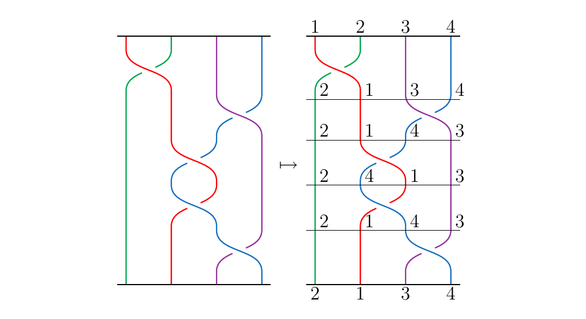 First we compute the table \begin{center}
| \(j\) | \(i_{j}\) | \(p_j\) | \(q_j\) | \(r_j\) |
|---|---|---|---|---|
| [0.5ex] 1 | 1 | 1 | k_1 = 3$ | \(k_2 = 2\) |
| 2 | 3 | \(1 + k_1 + k_2 = 6\) | \(k_3 = 1\) | \(k_4 = 3\) |
| 3 | 2 | \(1 + k_2 = 3\) | \(k_1 = 3\) | \(k_4 = 3\) |
| 4 | 2 | \(1 + k_2 = 3\) | \(k_4 = 3\) | \(k_1 = 3\) |
| 5 | 3 | \(1 + k_1 + k_2 = 6\) | \(k_4 = 3\) | \(k_3 = 1\) |
\end{center} This then gives us the product
which becomes
which reduces to
which correctly matches what we had before.
We haven't looked at a braid with an under crossing. So, consider the braid \(\beta = \sigma_1^{-1}\sigma_2^{-1}\sigma_3\sigma_2\sigma_1 \in B_4\), and let \(k_1 = 2, k_2 = 3, k_3 = 4, k_4 = 5\). We'll want to calculate the braid \(\beta(2, 3, 4, 5)\). Below is \(\beta\) and \(\beta(2,3,4,5)\). \ 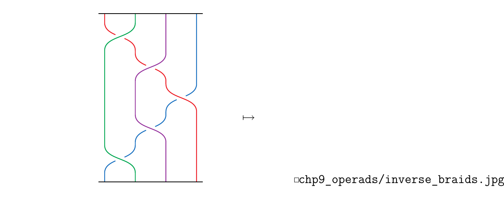 To calculate the resulting braid we need to create our table of values. This is more easily done by generating the permutation table on the left; it tells us how our cables are swapped around. \begin{center}
| Generator | Permutation |
|---|---|
| \(\varnothing\) | \((\textcolor{Red}{1}, \textcolor{Green}{2}, \textcolor{Purple}{3}, \textcolor{RoyalBlue}{4})\) |
| \(\sigma_1^{-1}\) | \((\textcolor{Green}{2}, \textcolor{Red}{1}, \textcolor{Purple}{3}, \textcolor{RoyalBlue}{4})\) |
| \(\sigma_1^{-1}\sigma_2^{-1}\) | \((\textcolor{Green}{2}, \textcolor{Purple}{3}, 1, \textcolor{RoyalBlue}{4})\) |
| \(\sigma_1^{-1}\sigma_2^{-1}\sigma_3\) | \((\textcolor{Green}{2}, \textcolor{Purple}{3}, \textcolor{RoyalBlue}{4}, 1)\) |
| \(\sigma_1^{-1}\sigma_2^{-1}\sigma_3\sigma_2\) | \((\textcolor{Green}{2}, \textcolor{RoyalBlue}{4}, \textcolor{Purple}{3}, 1)\) |
| \(\sigma_1^{-1}\sigma_2^{-1}\sigma_3\sigma_2\sigma_1\) | \((\textcolor{RoyalBlue}{4}, \textcolor{Green}{2}, \textcolor{Purple}{3}, 1)\) |
\hspace{1cm}
| \(j\) | \(i_{j}\) | \(p_j\) | \(q_j\) | \(r_j\) |
|---|---|---|---|---|
| [1ex] 1 | 1 | 1 | \(k_1 = 2\) | \(k_2 = 3\) |
| [.1ex] 2 | 2 | \(1 + k_2 = 4\) | \(k_1 =2\) | \(k_3 = 4\) |
| [.1ex] 3 | 3 | \(1 + k_2 + k_3 = 8\) | \(k_1 = 2\) | \(k_4 = 5\) |
| [.1ex] 4 | 2 | \(1 + k_2 = 4\) | \(k_3 =4\) | \(k_4 = 5\) |
| .1ex] 5 | 1 | \(1\) | \(k_2 = 3\) | \(k_4 = 5\) |
\end{center} This then generates the products
which becomes
which is the correct description of the braid \(\beta(2,3,4,5)\).
Now we can finally answer our desired question: \begin{center} Given a braid \(\beta \in B_n\), and \(n\) other braids \(\alpha_1 \in B_{a_1}, \dots, \alpha_n \in B_{a_n}\), what is the formula for \(\beta(\alpha_1, \dots, \alpha_n)\)? \end{center}To answer this question, we build on our previous work by making the following observation. Suppose we want to compute \(\sigma_1(\alpha_1, \alpha_2)\) where \(\sigma_1, \alpha_1, \alpha_2\) appear as below. \ 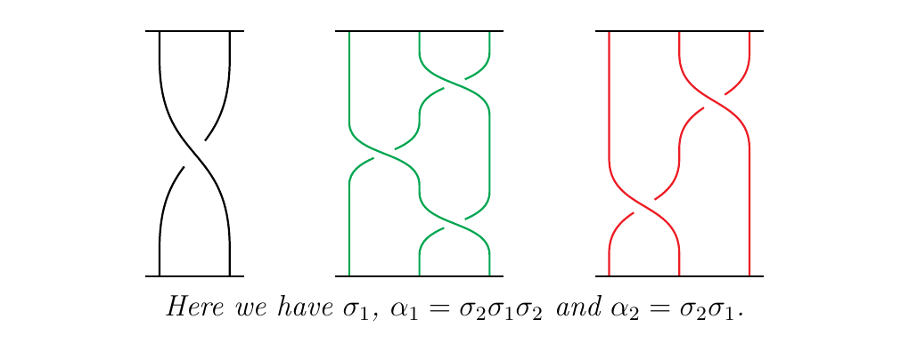 Then we get the braid diagram as in \raisebox{-0.1cm}{$ \(}. \\begin{center} \includegraphics[scale = 0.1]{braids_cabled.jpg} \end{center}owever, we can all isotopies to stretch the braid to \raisebox{-0.1cm}{\) \(}, then \raisebox{-0.1cm}{\) \(}, and then reaching a final stage of \raisebox{-0.1cm}{\) \(}. But note that \raisebox{-0.1cm}{\) $} may be expressed in either of the equivalent ways: \
\begin{minipage}{0.5\textwidth} \ 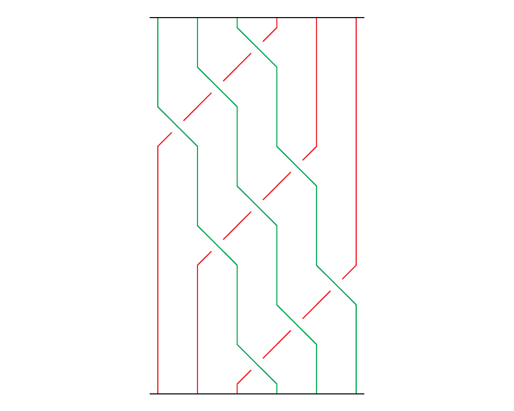 \ 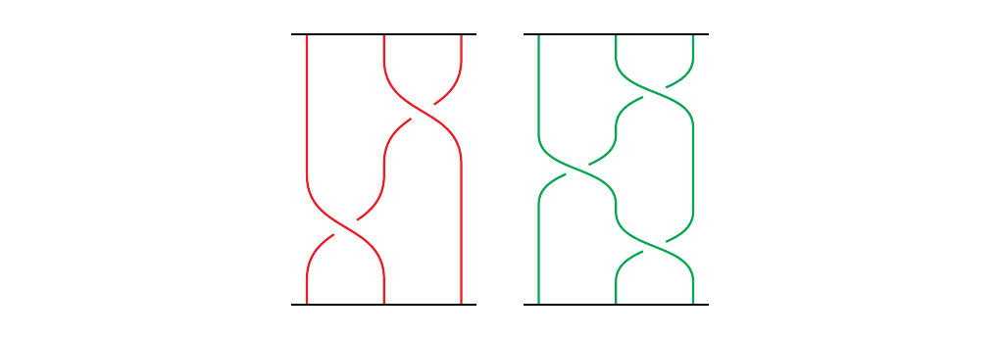 end{minipage} \begin{minipage}{0.5\textwidth} \ 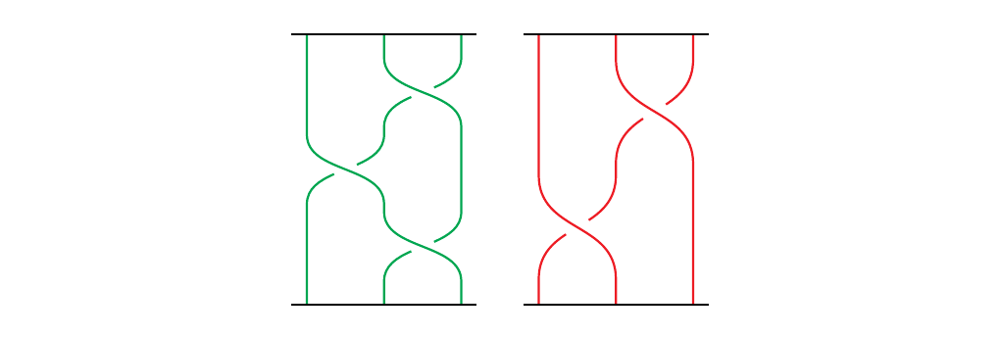 \ end{minipage} \vspace{1cm}
This then gives us the following idea. Suppose we want to calculate \(\beta(\alpha_1, \dots, \alpha_n)\) where \(\alpha_i \in B_{a_i}\). Define \(\alpha_1\oplus \dots \oplus \alpha_n\) as the \((a_1 + \cdots + a_n)\)-braid. Suppose that \(\alpha_j = \sigma_{j, i_j}, \dots, \sigma_{j, i_{k_j}}\). Then
which concatenates the braid horizontally. Then we see that